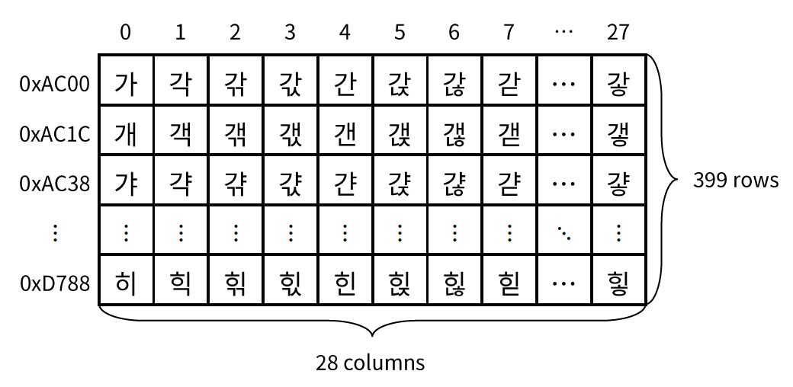
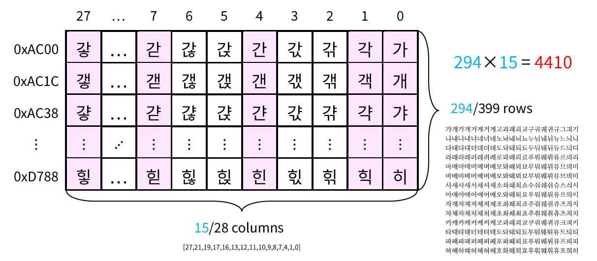
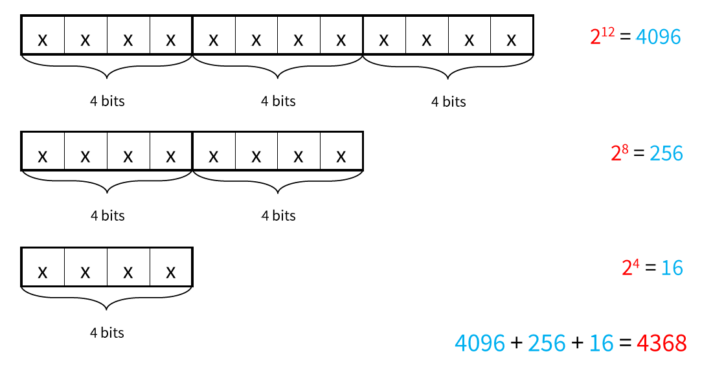
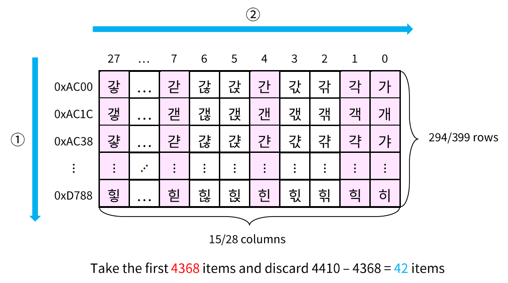

在 Unicode 中，Hangul 包括从 0xAC00 到 0xD7A3 的 11172 个字符，排列为 399 × 28 的表格。

为了发音方便，从 399 行中去除代表紧音的行共 105 行，剩余 294 行；
再从 28 列中去除部分代表双收音的列共 13 列，剩余 15 列。
由此剩余 4410 个字符。
同时，将表格左右倒置，原因见下。

为了对二进制序列进行编码，假定二进制序列的长度是 4 的倍数。
首先以 12 位为长度进行编码，有 4096 种取值，令其代表 0-4095；
若结尾剩余长度为 8 的序列，有 256 种取值，令其代表 4096-4351；
若结尾剩余长度为 4 的序列，有 16 种取值，令其代表 4352-4367。

将编码后得到的 4368 种取值，按列优先对应到上述 4410 个空位中，最后的 42 项舍弃。
表格被选取的 15 列中，前 14 列每列有 294 项；最后一列由于舍弃了 42 项，剩余 252 项。
若结尾剩余长度为 8 或长度为 4 的序列，有 272 种取值，很可能落入最后一列中。
而表格是经过左右倒置的，最后一列代表无收音。
因此经过这样编码的序列，结尾很可能无收音，这是为了发音方便。
